约 1172 个字 50 行代码 13 张图片 预计阅读时间 6 分钟
Chap 14 | “Parallel Algorithms”
章节启示录
摆烂了。……这章感觉重点是几个例子的掌握
1.两个问题¶
-
To describe a parallel algorithm
- Parallel Random Access Machine (PRAM)
- Work-Depth (WD)
-
To resolve access conflicts
- Exclusive-Read Exclusive-Write (EREW) (读写都不能并发)
- Concurrent-Read Exclusive-Write (CREW) (读可以并发，写不能并发)
- Concurrent-Read Concurrent-Write (CRCW) (读写都可以并发)
- Arbitrary rule (随机选择一个processor写)
- Priority rule (P with the smallest number) (优先级高的processor写)
- Common rule (if all the processors are trying to write the same value) (有相同的值时可以并发，写成功一次后就停止)
-
评估标准
- Work load – total number of operations: \(W(n)\)
- Worst-case running time: \(T(n)\)
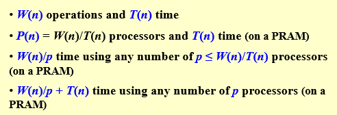
2.[Example] The summation problem¶
Input: A(1), A(2), …, A(n)
Output: A(1) + A(2) + … +A(n)
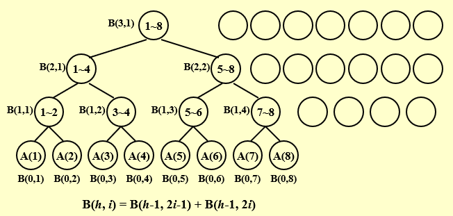
2.1 PRAM model¶
for Pi , 1 ≤ i ≤ n pardo
B(0, i) := A( i )
for h = 1 to log n do
if i ≤ n/2^h
B(h, i) := B(h-1, 2i-1) + B(h-1, 2i)
else stay idle
for i = 1: output B(log n, 1); for i > 1: stay idle
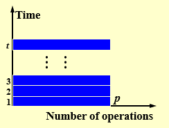
- PRAM 的两个缺点：
- 处理器数量变化时可迁移性差
- 所有处理器指令都要由程序员逐一分配，细节太多
2.2 Work-Depth (WD) Presentation¶
for Pi , 1 ≤ i ≤ n pardo
B(0, i) := A( i )
for h = 1 to log n
for Pi, 1 ≤ i ≤ n/2h pardo
B(h, i) := B(h-1, 2i-1) + B(h-1, 2i)
for i = 1 pardo
output B(log n, 1)
\(\large T(n) = logn+2\)
\(\large W(n) = n+n/2+n/2^2+…+n/2^k+1=2n,where\;\;2^k=n\)
任何WD模型的algorithm，用 \(P(n)\) 个 processor，运行时间都至多为 \(\large O(\frac{W(n)}{P(n)}+T(n))\)
3.[Example] Prefix-Sums¶
Input: A(1), A(2), …, A(n)
Output: \(\sum_{i=1}^1A(i),\sum_{i=1}^2A(i),…,\sum_{i=1}^3A(i)\)
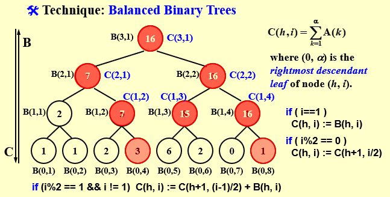
\(C(h,i)=\sum_{k=1}^αA(k)\)
where (0, α) is the rightmost descendant leaf of node (h, i).（最右最底的node）
$$
C(h,i) =
\begin{cases}
B(h,i) &(i==1)\\
C(h+1,i/2) &(i\%2==0)\\
C(h+1,(i-1)/2)+B(h,i) &(i\%2==1\&\&i!=1)\\
\end{cases}
$$
for Pi , 1 ≤ i ≤ n pardo
B(0, i) := A(i)
for h = 1 to log n
for i , 1 ≤ i ≤ n/2h pardo
B(h, i) := B(h - 1, 2i - 1) + B(h - 1, 2i)
for h = log n to 0
for i even, 1 ≤ i ≤ n/2h pardo
C(h, i) := C(h + 1, i/2)
for i = 1 pardo
C(h, 1) := B(h, 1)
for i odd, 3 ≤ i ≤ n/2h pardo
C(h, i) := C(h + 1, (i - 1)/2) + B(h, i)
for Pi , 1 ≤ i ≤ n pardo
Output C(0, i)
\(W(n)=O(n)\)
4.[Example] Merging – merge two non-decreasing arrays¶
A(1), A(2), …, A(n) 和 B(1), B(2), …, B(m) 变成另一个非递减数组 C(1), C(2), …, C(n+m)
-
为了简化起见，假设：
- \(A\) 和 \(B\) 的元素成对不同
- \(\large n = m\)
- \(\large log n\) 和 \(\large n/log n\) 都是整数
-
partitioning - 将输入划分为大量独立的小作业，比如 \(p\)，这样最大的小作业的个数大约是 \(n/p\)
- actual work - 同时执行小作业，对每个作业使用单独的（可能是串行）算法
Merging \(\Rightarrow\) Ranking¶
将 Merging 问题转换为 Ranking 问题。本质上是得出 \(A\) 中每个元素在 \(B\) 中的排序位置，然后将其放在 \(C\) 中对应的位置（A元素本身的下标加上在B中的位置），同理， \(B\) 也一样。
e.g:
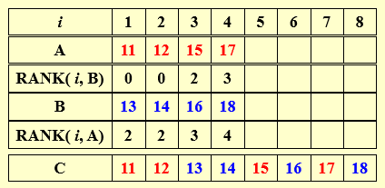
for Pi , 1 ≤ i ≤ n pardo
C(i + RANK(i, B)) := A(i)
for Pi , 1 ≤ i ≤ n pardo
C(i + RANK(i, A)) := B(i)
法一：Binary Search:¶
\(T(n)=O(logn)\) \(W(n)=O(nlogn)\)法二：Serial Ranking:¶
i = j = 0;
while ( i ≤ n || j ≤ m ) {
if ( A(i+1) < B(j+1) )
RANK(++i, B) = j;
else RANK(++j, A) = i;
}
注意：串行算法中默认增加了A(n+1)和B(m+1)，它们比原始的最大元要大。
比较：串行减少了W，但增大了T
法三：Parallel Ranking:¶
假设 \(n = m\) ;并且 \(A(n+1)\) 和 \(B(n+1)\) 都大于 \(A(n)\) 和 \(B(n)\)。
- Stage 1: Partitioning \(p=n/logn\)
\(A\_Select( i ) = A( 1+(i-1)logn ) \;\; for 1 ≤ i ≤ p\)
\(B\_Select( i ) = B( 1+(i-1)logn ) \;\; for 1 ≤ i ≤ p\)
\(T=O(logn)\)
\(W=O(plogn)=O(n)\)
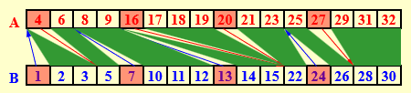
- Stage 2: Actual Ranking
At most \(2p\) smaller sized \((O(logn))\) problems.
\(T=O(logn)\)
\(W=O(n)\)
5.[Example] Maximum Finding¶
法一：在求和算法中将“+”替换为“max”¶
\(T(n)=O(logn)\) , \(W(n)=O(n)\)
法二：比较所有对¶
for Pi , 1 ≤ i ≤ n pardo
B(i) := 0
for i and j, 1 ≤ i, j ≤ n pardo
if ( (A(i) < A(j)) || ((A(i) = A(j)) && (i < j)) )
B(i) = 1
else B(j) = 1
for Pi , 1 ≤ i ≤ n pardo
if B(i) == 0
A(i) is a maximum in A
法三：Doubly-logarithmic Paradigm¶
设 \(\large h=loglogn\) 是一个整数 (\(\large n=2^{2^h}\))
-
将 \(n\) 个元素划分为 \(\sqrt{n}\) 个长 \(\sqrt{n}\) 的段
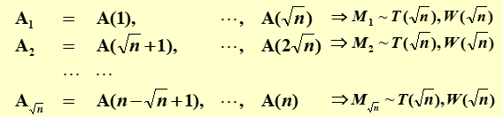
共用 \(T_1=T(\sqrt{n})\) ， 空间需要 \(W_1 = \sqrt{n}W(\sqrt{n})\)。之后在 \(max1,max2,…,max\sqrt{n}\) 中找最大(用比较所有对的方法)，\(T_2=O(1)=c\) ，\(W_2=O(\sqrt{n}^2)=O(n)\) 。
综上所述，\(T≤T_1+T_2 = T(\sqrt{n})+c\) , \(W≤W_1+W_2=\sqrt{n}W(\sqrt{n})+O(n)\)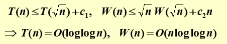
-
将 \(n\) 个元素划分为 \(\large \frac{n}{h}\) 个长 \(h\) 的段
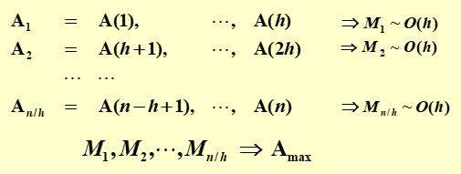
共用 \(T_1 = O(h)\) ， \(W_1 = n/h * O(h)\)。之后在 \(max1,max2,…,max\frac{n}{h}\) 中找最大(用以 \(\sqrt{n}\) 为划分的方式找最大)， \(T_2 = O(loglog\frac{n}{h})\) , \(W_2 = O(\frac{n}{h}loglog\frac{n}{h})\) 。
综上所述，\(T ≤ T_1+T_2=O(h)+O(loglog\frac{n}{h})\) ， \(W≤W_1+W_2=n/h * O(h)+O(\frac{n}{h}loglog\frac{n}{h})\)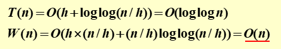
法四：Random Sampling¶
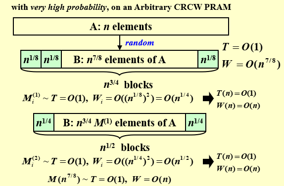
- 第一步：选取 \(n^{7/8}\) 个数，每 \(n^{1/8}\) 为一个block，总共有 \(n^{7/8}/n^{1/8}=n^{3/4}\) 个block 。
\(T=O(1)\) , \(W=O(n^{7/8})\) - 第二步：对每个block用比较所有对，得到 $n^{3/4} $ 个max值。
\(T=O(1)\) , \(W_i=O((n^{1/8})^2)=O(n^{1/4})\) , \(W=n^{3/4}*W_i=O(n)\) - 第三步：将 $n^{3/4} $ 个max值进行进一步寻找，此时设置每 \(n^{1/4}\) 为一个block，总共有 \(n^{3/4}/n^{1/4}=n^{1/2}\) 个block。
- 第四步：对每个block用比较所有对，得到 $n^{1/2} $ 个max值。 \(T=O(1)\) , \(W_i=O((n^{1/4})^2)=O(n^{1/2})\) , \(W=n^{1/2}*W_i=O(n)\)
- 第五步：继续向下迭代
最终可以解出 \(n^{7/8}\) 个中最大的，但不是 \(n\) 个数中最大的。
该算法在 \(n\) 个元素中找到最大值。 它以 \(O(1)\) 时间和 \(O(n)\) 功运行的概率非常高。在此时间和工作复杂度内未完成的概率为 \(O(1/n^c)\)。